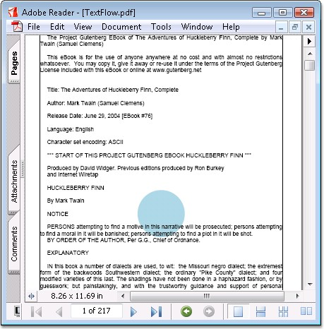

Text in a PDF document can flow through multiple pages. You can specify different formats for the text element using PDFStringFormat class of Essential PDF. The following code snippet illustrates how to draw the text element of a PDF document with the custom formats.
|
[C#]
//Create a new PDF document. PdfDocument doc = new PdfDocument();
//Add a page to the document. PdfPage page = doc.Pages.Add();
//Read the text from the text file string path = "../../../../../Data/SampleText.txt"; StreamReader reader = new StreamReader(path, Encoding.ASCII); string text = reader.ReadToEnd(); reader.Close();
//Set the formats for the text PdfStringFormat format = new PdfStringFormat(); format.Alignment = PdfTextAlignment.Justify; format.LineAlignment = PdfVerticalAlignment.Top; format.ParagraphIndent = 15f;
//Create a text element PdfTextElement element = new PdfTextElement(text, font); element.Brush = new PdfSolidBrush(Color.Black); element.StringFormat = format; element.Font = new PdfStandardFont(PdfFontFamily.Helvetica, 12);
//Set the properties to paginate the text. PdfLayoutFormat layoutFormat = new PdfLayoutFormat(); layoutFormat.Break = PdfLayoutBreakType.FitPage; layoutFormat.Layout = PdfLayoutType.Paginate;
//Draw the text element with the properties and formats set. PdfTextLayoutResult result = element.Draw(page, bounds, layoutFormat);
//Save the document. doc.Save("Sample.pdf"); |
|
[VB.NET]
'Create a new PDF document. Dim doc As PdfDocument = New PdfDocument()
'Set compression level doc.Compression = PdfCompressionLevel.None
'Add a page to the document. Dim page As PdfPage = doc.Pages.Add()
'Read the text from the text file Dim path As String = "../../../../../Data/SampleText.txt" Dim reader As StreamReader = New StreamReader(path, Encoding.ASCII) Dim text As String = reader.ReadToEnd() reader.Close()
'Set the formats for the text Dim format As PdfStringFormat = New PdfStringFormat() format.Alignment = PdfTextAlignment.Justify format.LineAlignment = PdfVerticalAlignment.Top format.ParagraphIndent = 15f
'Create a text element Dim element As PdfTextElement = New PdfTextElement(text, font) element.Brush = New PdfSolidBrush(Color.Black) element.StringFormat = format element.Font = New PdfStandardFont(PdfFontFamily.Helvetica, 12)
'Set the properties to paginate the text. Dim layoutFormat As PdfLayoutFormat = New PdfLayoutFormat() layoutFormat.Break = PdfLayoutBreakType.FitPage layoutFormat.Layout = PdfLayoutType.Paginate Dim bounds As RectangleF = New RectangleF(PointF.Empty, page.Graphics.ClientSize)
'Draw the text element with the properties and formats set. Dim result As PdfTextLayoutResult = element.Draw(page, bounds, layoutFormat)
'Save the document. doc.Save("Sample.pdf") |

Figure 35: Text Pagination